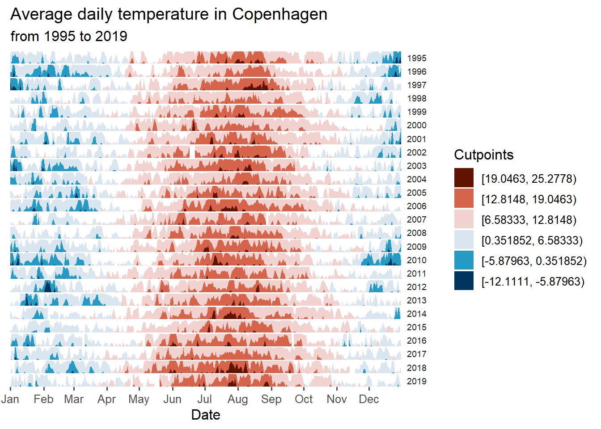
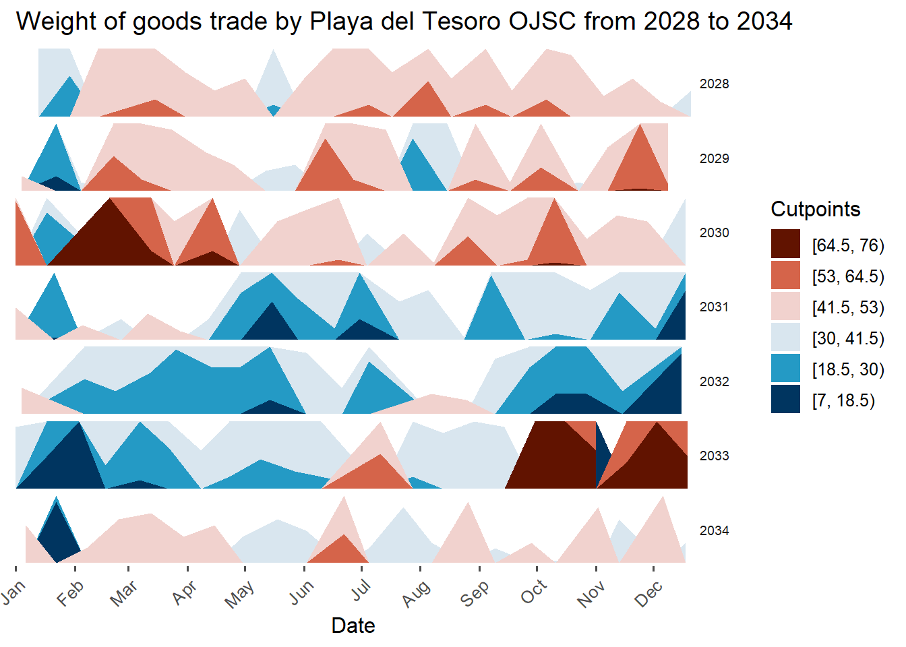
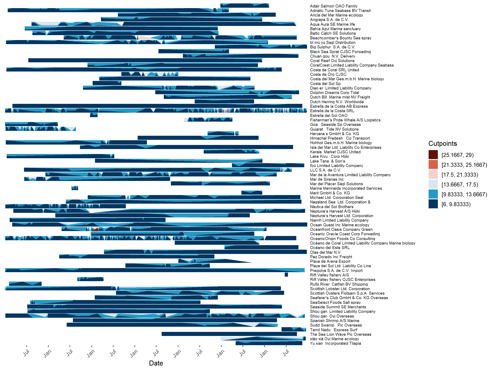

pacman::p_load(jsonlite, igraph, tidygraph, ggraph,
visNetwork, lubridate, clock,
tidyverse, graphlayouts,knitr,plotly,
ggHoriPlot, ggthemes,patchwork)gghorizon
utils::data(climate_CPH)glimpse(climate_CPH)Rows: 9,132
Columns: 9
$ Region <chr> "Europe", "Europe", "Europe", "Europe", "Europe", "Euro…
$ Country <chr> "Denmark", "Denmark", "Denmark", "Denmark", "Denmark", …
$ State <chr> NA, NA, NA, NA, NA, NA, NA, NA, NA, NA, NA, NA, NA, NA,…
$ City <chr> "Copenhagen", "Copenhagen", "Copenhagen", "Copenhagen",…
$ Month <dbl> 1, 1, 1, 1, 1, 1, 1, 1, 1, 1, 1, 1, 1, 1, 1, 1, 1, 1, 1…
$ Day <dbl> 1, 2, 3, 4, 5, 6, 7, 8, 9, 10, 11, 12, 13, 14, 15, 16, …
$ Year <dbl> 1995, 1995, 1995, 1995, 1995, 1995, 1995, 1995, 1995, 1…
$ AvgTemperature <dbl> 1.2222222, -0.8333333, -4.0000000, -3.0555556, -4.83333…
$ date_mine <date> 2021-01-01, 2021-01-02, 2021-01-03, 2021-01-04, 2021-0…The
mutate()function is used to create a new column named “outlier” in theclimate_CPHdataframe.The
between()function is applied to the “AvgTemperature” column, checking if each value falls within a certain range.The range is defined using the lower and upper cutpoints. The lower cutpoint is calculated as the first quartile (25th percentile) of the “AvgTemperature” column minus 1.5 times the interquartile range (IQR), while the upper cutpoint is calculated as the third quartile (75th percentile) plus 1.5 times the IQR. The
quantile()function is used to calculate the quartiles, and theIQR()function is used to calculate the interquartile range.The resulting logical values are stored in the “outlier” column.
Finally, the
filter()function is used to keep only the rows where the “outlier” column has a value ofTRUE, effectively filtering out the rows that do not meet the outlier criteria based on the “AvgTemperature” values.
cutpoints <- climate_CPH %>%
mutate(
outlier = between(
AvgTemperature,
quantile(AvgTemperature, 0.25, na.rm=T)-
1.5*IQR(AvgTemperature, na.rm=T),
quantile(AvgTemperature, 0.75, na.rm=T)+
1.5*IQR(AvgTemperature, na.rm=T))) %>%
filter(outlier)The
sum()function is used to calculate the sum of the minimum and maximum values of the “AvgTemperature” column in thecutpointsdataframe. Therange()function returns a vector containing the minimum and maximum values of the specified column. The result is divided by 2 to obtain the midpoint of the range. This midpoint is stored in the variableori.The
seq()function is used to generate a sequence of values. It takes three arguments: the start value, the end value, and the length of the sequence. In this case, the start value is the minimum value of the “AvgTemperature” column, and the end value is the maximum value of the “AvgTemperature” column. The length of the sequence is set to 7. The[-4]at the end of the sequence generation excludes the fourth element from the sequence. The resulting sequence of values is stored in the variablesca.
Overall, the code calculates the midpoint of the range of values in the “AvgTemperature” column and generates a sequence of values based on the minimum and maximum values in the same column. The generated sequence is used for further analysis or plotting purposes.
ori <- sum(range(cutpoints$AvgTemperature))/2
sca <- seq(range(cutpoints$AvgTemperature)[1],
range(cutpoints$AvgTemperature)[2],
length.out = 7)[-4]round(ori, 2) # The origin[1] 6.58#> [1] 6.58
round(sca, 2) # The horizon scale cutpoints[1] -12.11 -5.88 0.35 12.81 19.05 25.28#> [1] -12.11 -5.88 0.35 12.81 19.05 25.28Plotting the horizon
The
ggplot()function initializes the plot.The
geom_horizon()function creates the horizon plot. It uses thedate_minecolumn as the x-axis, theAvgTemperaturecolumn as the y-axis, and the..Cutpoints..variable for filling the horizons.The
originparameter sets the origin of the horizon plot to the value stored in the variableori.The
horizonscaleparameter sets the scale of the horizons using the values stored in the variablesca.The
scale_fill_hcl()function sets the color palette for the filled horizons. It uses the ‘RdBu’ palette and reverses the order of the colors withreverse = T.The
facet_grid()function creates a grid of facets (small multiples) based on theYearcolumn.The
theme_few()function applies a pre-defined minimalistic theme to the plot.The
theme()function is used to modify specific aspects of the plot’s appearance. It removes vertical panel spacing, adjusts the size, angle, and justification of y-axis strip text, removes y-axis text, title, and ticks, and removes the panel border.The
scale_x_date()function is used to customize the x-axis. It sets the expand parameter to c(0,0) to remove padding, sets the date breaks to “1 month”, and sets the date labels to “%b” for abbreviated month names.The
xlab()function sets the label for the x-axis.The
ggtitle()function sets the plot title and subtitle.
climate_CPH %>% ggplot() +
geom_horizon(aes(date_mine,
AvgTemperature,
fill = ..Cutpoints..),
origin = ori, horizonscale = sca) +
scale_fill_hcl(palette = 'RdBu', reverse = T) +
facet_grid(Year~.) +
theme_few() +
theme(
panel.spacing.y=unit(0, "lines"),
strip.text.y = element_text(size = 7, angle = 0, hjust = 0),
axis.text.y = element_blank(),
axis.title.y = element_blank(),
axis.ticks.y = element_blank(),
panel.border = element_blank()
) +
scale_x_date(expand=c(0,0),
date_breaks = "1 month",
date_labels = "%b") +
xlab('Date') +
ggtitle('Average daily temperature in Copenhagen',
'from 1995 to 2019')Warning: The dot-dot notation (`..Cutpoints..`) was deprecated in ggplot2 3.4.0.
ℹ Please use `after_stat(Cutpoints)` instead.Warning: Using the `size` aesthetic in this geom was deprecated in ggplot2 3.4.0.
ℹ Please use `linewidth` in the `default_aes` field and elsewhere instead.
2 Trying it on nodes_seafood_vis
mc2_seafood_edges_agg_vis<- readRDS("C:/yixin-neo/ISSS608-VAA/Project/data/mc2_seafood_edges_agg_vis.rds")glimpse(mc2_seafood_edges_agg_vis)Rows: 2,054
Columns: 12
$ from <chr> "Adair Salmon ОАО Family", "Adair Salmon ОАО Family", "Ada…
$ to <chr> "Panope Limited Liability Company", "Panope Limited Liabil…
$ arrivaldate <date> 2032-12-25, 2033-01-17, 2033-01-11, 2033-12-22, 2033-12-2…
$ Weight <int> 6, 8, 7, 6, 6, 6, 6, 6, 6, 6, 6, 7, 6, 9, 8, 6, 7, 9, 6, 6…
$ Totalweight <int> 143655, 180145, 125925, 155265, 155250, 155295, 216095, 18…
$ hscode <chr> "160414", "160414", "160414", "160414", "160414", "160414"…
$ year <dbl> 2032, 2033, 2033, 2033, 2033, 2034, 2033, 2033, 2033, 2033…
$ month <dbl> 12, 1, 1, 12, 12, 1, 3, 4, 7, 8, 9, 9, 9, 10, 10, 1, 1, 2,…
$ day <int> 25, 17, 11, 22, 25, 2, 18, 16, 24, 28, 10, 19, 25, 2, 6, 2…
$ weekday <ord> Saturday, Monday, Tuesday, Thursday, Sunday, Monday, Frida…
$ weeknumber <dbl> 52, 3, 2, 51, 51, 1, 11, 15, 29, 34, 36, 38, 38, 39, 40, 3…
$ title <chr> "Total Weight = 143655 \n HSCODE = 160414", "Total Weight…mc2_seafood_edges_agg_vis %>% group_by(from) %>% summarise(Allweight = sum(Weight)) %>%
arrange(desc(Allweight))# A tibble: 76 × 2
from Allweight
<chr> <int>
1 "Playa del Tesoro OJSC" 6139
2 "Estrella de la Costa SRL" 2797
3 "OceanicOrigin Foods Co Consulting" 1629
4 "Náutica del Sol Brothers" 816
5 "Beachcomber's Bounty Sea spray" 557
6 "Mar de la Aventura Limited Liability Company" 544
7 "Shou gan Oyj Overseas" 483
8 "Diao er Limited Liability Company" 425
9 "Oceanfront Oasis Company Green " 390
10 "Gujarat Tide NV Solutions" 380
# ℹ 66 more rowsplaya <- mc2_seafood_edges_agg_vis %>%
filter(from == "Playa del Tesoro OJSC")cutpoints_playa <- playa %>%
mutate(
outlier = between(
Weight,
quantile(Weight, 0.25, na.rm=T)-
1.5*IQR(Weight, na.rm=T),
quantile(Weight, 0.75, na.rm=T)+
1.5*IQR(Weight, na.rm=T))) %>%
filter(outlier)ori <- sum(range(cutpoints_playa$Weight))/2
sca <- seq(range(cutpoints_playa$Weight)[1],
range(cutpoints_playa$Weight)[2],
length.out = 7)[-4]First we have to fix the arrivaldate column such that all the year value are the same (for the purpose for plotting horizon chart later). All the year values will get a default ‘2021’
playa$mine_date <- sprintf("2021-%s-%s", substr(playa$arrivaldate, 6, 7), substr(playa$arrivaldate, 9, 10))
playa$mine_date <- as.Date(playa$mine_date)playa %>% ggplot() +
geom_horizon(aes(mine_date,
Weight,
fill = ..Cutpoints..),
origin = ori, horizonscale = sca) +
scale_fill_hcl(palette = 'RdBu', reverse = T) +
facet_grid(year~.) +
theme_few() +
theme(
panel.spacing.y=unit(0, "lines"),
strip.text.y = element_text(size = 7, angle = 0, hjust = 0),
axis.text.y = element_blank(),
axis.title.y = element_blank(),
axis.ticks.y = element_blank(),
panel.border = element_blank()
) +
scale_x_date(expand=c(0,0),
date_breaks = "1 month",
date_labels = "%b") +
xlab('Date') +
theme(axis.text.x = element_text(angle = 45, hjust = 1)) +
ggtitle('Weight of goods trade by Playa del Tesoro OJSC from 2028 to 2034')
asd <-playa %>% ggplot() +
geom_horizon(aes(arrivaldate,
Weight,
fill = ..Cutpoints..),
origin = ori, horizonscale = sca) +
scale_fill_hcl(palette = 'RdBu', reverse = T) +
#facet_grid(year~.) +
theme_few() +
theme(
panel.spacing.y=unit(0, "lines"),
strip.text.y = element_text(size = 7, angle = 0, hjust = 0),
axis.text.y = element_blank(),
axis.title.y = element_blank(),
axis.ticks.y = element_blank(),
panel.border = element_blank()
) +
scale_x_date(expand=c(0,0),
date_breaks = "6 month",
date_labels = "%b") +
xlab('Date') +
theme(axis.text.x = element_text(angle = 45, hjust = 1))FOR ENTIRE except playa
top10_outdeg <-subset(mc2_seafood_edges_agg_vis, from %in% c('Playa del Tesoro OJSC', 'Estrella de la Costa SRL', 'OceanicOrigin Foods Co Consulting', 'Náutica del Sol Brothers', 'Beachcomber\'s Bounty Sea spray', 'Mar de la Aventura Limited Liability Company', 'Shou gan Oyj Overseas', 'Diao er Limited Liability Company', 'Oceanfront Oasis Company Green ', 'Gujarat Tide NV Solutions'))cutpoints_top10_outdeg <- top10_outdeg %>%
mutate(
outlier = between(
Weight,
quantile(Weight, 0.25, na.rm=T)-
1.5*IQR(Weight, na.rm=T),
quantile(Weight, 0.75, na.rm=T)+
1.5*IQR(Weight, na.rm=T))) %>%
filter(outlier)ori <- sum(range(top10_outdeg$Weight))/2
sca <- seq(range(top10_outdeg$Weight)[1],
range(top10_outdeg$Weight)[2],
length.out = 7)[-4]top10_outdeg$mine_date <- sprintf("2021-%s-%s", substr(top10_outdeg$arrivaldate, 6, 7), substr(top10_outdeg$arrivaldate, 9, 10))
top10_outdeg$mine_date <- as.Date(top10_outdeg$mine_date)top10_outdeg %>% ggplot() +
geom_horizon(aes(arrivaldate,
Weight,
fill = ..Cutpoints..),
origin = ori, horizonscale = sca) +
scale_fill_hcl(palette = 'RdBu', reverse = T) +
facet_grid(from~.) +
theme_few() +
theme(
panel.spacing.y=unit(0, "lines"),
strip.text.y = element_text(size = 7, angle = 0, hjust = 0),
axis.text.y = element_blank(),
axis.title.y = element_blank(),
axis.ticks.y = element_blank(),
panel.border = element_blank()
) +
scale_x_date(expand=c(0,0),
date_breaks = "6 month",
date_labels = "%b") +
xlab('Date') +
theme(axis.text.x = element_text(angle = 45, hjust = 1))